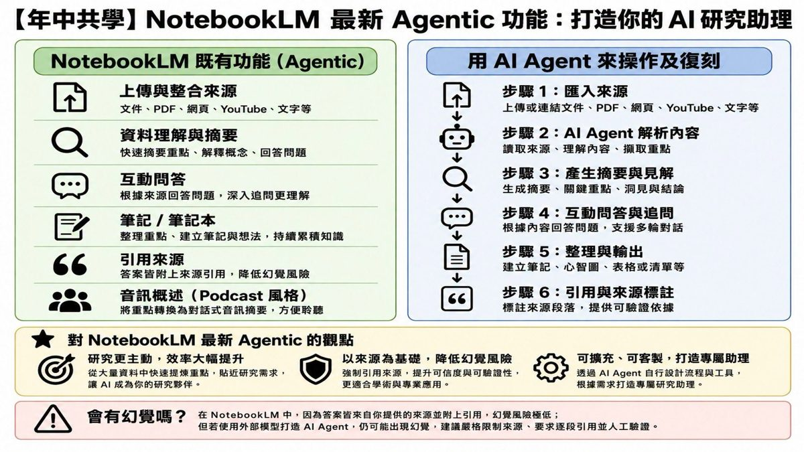
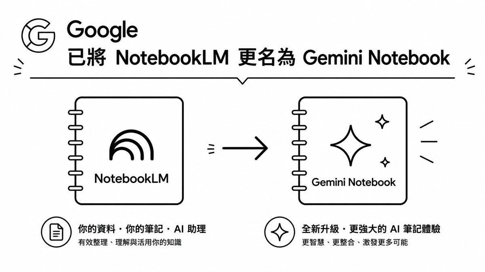
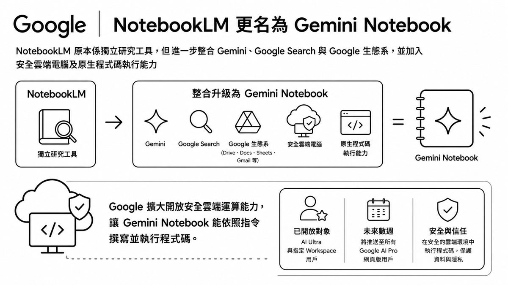
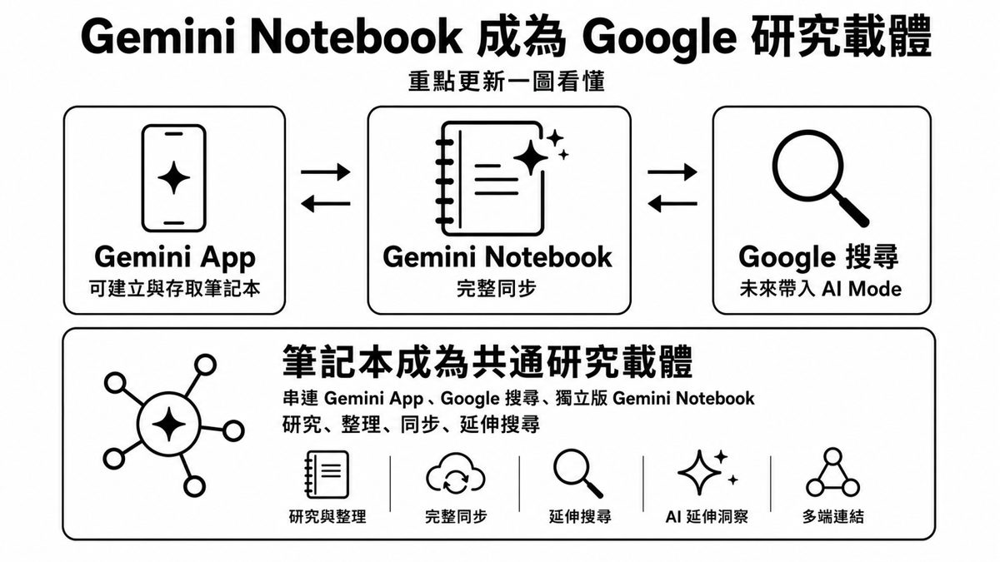
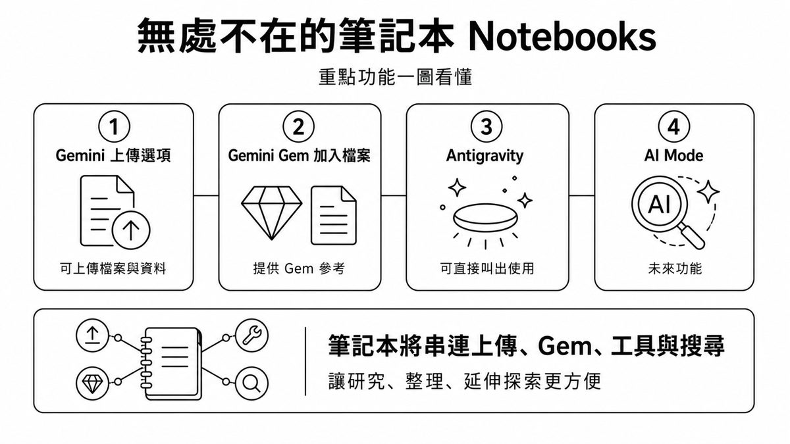
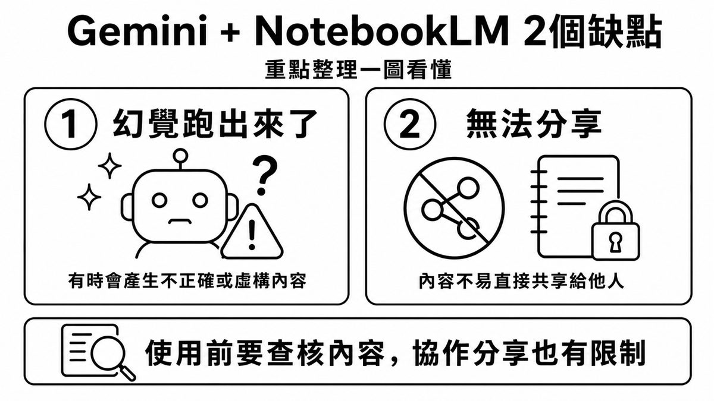
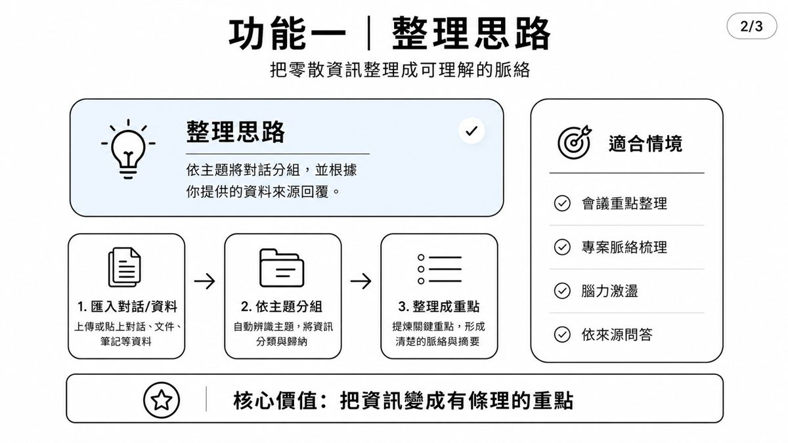
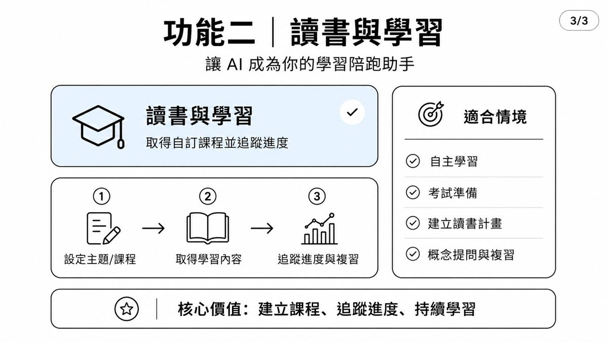

0. 課程資訊與教材
| 課程名稱 | EP202607.20「NotebookLM 最新 Agentic 功能：打造你的 AI 研究助理」（年中共學 5 天系列之一） |
|---|---|
| 頻道 | 生成式 AI 應用電台・年中共學 |
| 教材 | 官方課程簡報 10 頁（逐頁原圖全收錄）；另附「NotebookLM Agentic Pack」懶人包（README＋4 個 Skills＋安裝腳本）與「懶人包介紹」補充簡報（74KB 純文字／向量版） |
| 一句話先懂 | NotebookLM 原本就有「上傳來源、摘要問答、引用來源」等六大功能；這集教你用 AI Agent 把這些功能拆成六個可操作步驟去復刻，同時 Google 也正把 NotebookLM 整合進 Gemini 生態系、更名為 Gemini Notebook。 |

1. NotebookLM 既有六大功能
簡報封面左欄（原文照錄）。
| 功能 | 說明 |
|---|---|
| 上傳與整合來源 | 文件、PDF、網頁、YouTube、文字等 |
| 資料理解與摘要 | 快速摘要重點、解釋概念、回答問題 |
| 互動問答 | 根據來源回答問題，深入追問更理解 |
| 筆記／筆記本 | 整理重點、建立筆記與想法，持續累積知識 |
| 引用來源 | 答案皆附上來源引用，降低幻覺風險 |
| 音訊概述（Podcast 風格） | 將重點轉換為對話式音訊摘要，方便聆聽 |
2. 用 AI Agent 復刻操作六步驟
簡報封面右欄（原文照錄）——每一步都對應第 1 章的一項既有功能。
- 匯入來源：上傳或連結文件、PDF、網頁、YouTube、文字等。
- AI Agent 解析內容：讀取來源、理解內容、擷取重點。
- 產生摘要與見解：生成摘要、關鍵重點、洞見與結論。
- 互動問答與追問：根據內容回答問題，支援多輪對話。
- 整理與輸出：建立筆記、心智圖、表格或清單等。
- 引用與來源標註：標註來源段落，提供可驗證依據。
| 對 NotebookLM 最新 Agentic 的觀點 |
|---|
| 研究更主動，效率大幅提升：從大量資料中快速提煉重點，貼近研究需求，讓 AI 成為你的研究夥伴。 |
| 以來源為基礎，降低幻覺風險：強制引用來源，提升可信度與可驗證性，更適合學術與專業應用。 |
| 可擴充、可客製，打造專屬助理：透過 AI Agent 自行設計流程與工具，根據需求打造專屬研究助理。 |
⚠️ 會有幻覺嗎？在 NotebookLM 中，因為答案皆自你提供的來源並附引用，幻覺風險極低；但若使用外部模型打造 AI Agent，仍可能出現幻覺，建議嚴格限制來源、要求逐段引用並人工驗證。
3. NotebookLM 更名為 Gemini Notebook


4. Gemini Notebook 成為研究載體

5. 無處不在的筆記本

6. 目前的兩個缺點

7. Gemini 兩大功能：整理思路 vs 讀書與學習
| 功能 | 核心價值 | 適合情境 |
|---|---|---|
| 整理思路 | 把零散資訊整理成可理解的脈絡（匯入對話/資料 → 依主題分組 → 整理成重點） | 會議重點整理、專案脈絡梳理、腦力激盪、依來源問答 |
| 讀書與學習 | 建立課程、追蹤進度、持續學習（設定主題/課程 → 取得學習內容 → 追蹤進度與複習） | 自主學習、考試準備、建立讀書計畫、概念提問與複習 |


8. 附錄：NotebookLM Agentic Pack 懶人包
課程資料夾附上一份可交付的 Windows 懶人包，把 NotebookLM MCP 與 4 個研究 Skills 串接起來（README.md 原文整理）。
5 分鐘啟動（PowerShell）Set-ExecutionPolicy -Scope Process Bypass
cd "<本資料夾>"
.\install_notebooklm_mcp.ps1
.\login_notebooklm.ps1
.\setup_codex.ps1
.\install_skills.ps1 -Force
.\verify_notebooklm.ps1
| 元件 | 用途 |
|---|---|
| install_notebooklm_mcp.ps1 | 安裝 Python 3.12（缺少時）、notebooklm-mcp-cli，並嘗試安裝 Chrome |
| login_notebooklm.ps1 | 開啟瀏覽器登入並檢查 cookie/token |
| setup_codex.ps1 | 以 codex mcp add 註冊 notebooklm-mcp，並提供通用 JSON |
| install_skills.ps1 | 將 4 個 Skills 複製到 %CODEX_HOME%\skills 或 %USERPROFILE%\.codex\skills |
| verify_notebooklm.ps1 | 執行 nlm doctor、登入檢查、Skill validator 與 JSON schema 驗證 |
4 個 Skill 的串接（來自「懶人包介紹」補充簡報）
串接流程Evidence Gap → Literature Critic（含三角檢證）
↘ ↓
Cross-Notebook Compare → APA References → 研究稿件
- Evidence Gap（研究缺口）：盤點現有證據，建立缺口矩陣（概念｜實證｜方法／樣本｜測量｜情境），核心規則「找不到 ≠ 不存在」，每個補充來源都要有理由與可定位證據。
- Literature Critic（文獻批判與回顧）：產出 Source Map、Claim Matrix（支持／反駁／不確定）、Critical Synthesis；每段輸出都要有 claim_id，沒有 citation 的內容會降級為 uncited／needs_verification。三角檢證：核心 claim × 理論（不同 lens）× 資料／來源（不同作者、場域）× 方法（量化、質性、混合），三軸不足就標記 not_triangulated。
- Cross-Notebook Compare（跨筆記本比較）：每本筆記本先獨立分析，再做 Claim Normalization 與比較矩陣（共識／爭議／可轉移性），規則是「不把 A notebook 的證據當成 B notebook 的證據，先隔離再比較」。
- APA References（APA 7 引用）：抽取 metadata（作者／年份／題名）、驗證 DOI/URL（Crossref／出版社），輸出文內引用＋參考文獻，可匯出 CSL-JSON／BibTeX／RIS；缺資料標記為 NEEDS_VERIFICATION，不自行補造。
⚠️ 重要限制（README 原文）：notebooklm-mcp-cli 是社群維護的非官方橋接器，透過瀏覽器登入與持久化 session 工作；請勿把敏感資料放入未審核的第三方橋接器。NotebookLM 的 source、配額與功能會依帳號／方案／地區改變。跨 notebook 比較由 Agent 逐一查詢後標準化，不是宣稱 NotebookLM 原生共享所有 notebook context。APA Skill 只格式化與驗證 metadata，不會以語言模型猜測 DOI、作者或年份。
上游 MCP/CLI：jacob-bd/notebooklm-mcp-cli；NotebookLM 官方說明：使用 NotebookLM Chat、建立筆記本與獨立來源。
9. 重點整理
- 既有六大功能 → Agent 六步驟：上傳來源、摘要理解、互動問答、筆記整理、引用來源、音訊概述，一一對應 Agent 的匯入、解析、產生、追問、輸出、標註六步驟。
- 更名為 Gemini Notebook：整合 Gemini、Google 搜尋、Google 生態系、安全雲端電腦、原生程式碼執行能力。
- 成為共通研究載體：串連 Gemini App、Google 搜尋（未來 AI Mode）、獨立版 Gemini Notebook。
- 兩個缺點：仍有幻覺風險、內容不易分享，使用前要查核、協作分享有限制。
- Gemini 兩大功能：整理思路（工作向）vs 讀書與學習（學習陪跑向）。
- 懶人包附錄：NotebookLM MCP + 4 個研究 Skills，串成「找缺口 → 批判回顧 → 跨筆記本比較 → APA 引用」的證據鏈研究工作流。
10. 資料來源與製作說明
- 原始教材：EP202607.20「NotebookLM 最新 Agentic 功能：打造你的 AI 研究助理」官方課程簡報 10 頁；另附「NotebookLM Agentic Pack」懶人包（README＋4 Skills＋安裝腳本）與「懶人包介紹」補充簡報全文；均為 anyone-reader 權限、公開可下載。
- 製作方式：下載原始 pptx → 取出 10 頁投影片原圖 → 逐頁親眼判讀並整理重點 → 讀取懶人包 README.md 全文與補充簡報全文 → 對照整理成本頁章節。內容為真實課程內容，非推測改寫。
- 誠實聲明：本集 Drive 資料夾未附獨立錄影，示範操作畫面與逐字稿時間碼暫缺，本頁以簡報實錄與懶人包說明文件為準；如日後取得錄影可再補入現場示範細節。NotebookLM／Gemini Notebook 相關功能開放對象與時程會持續更新，實際情況請以當下官方公告為準。
- 介面參考：版型沿用本站 EP29–EP47 課堂筆記的乾淨白底編輯風格。